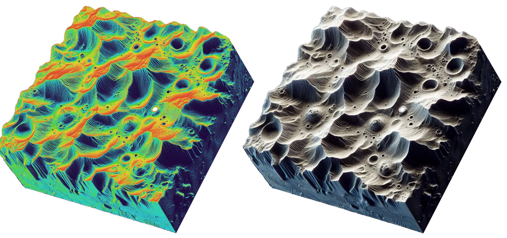
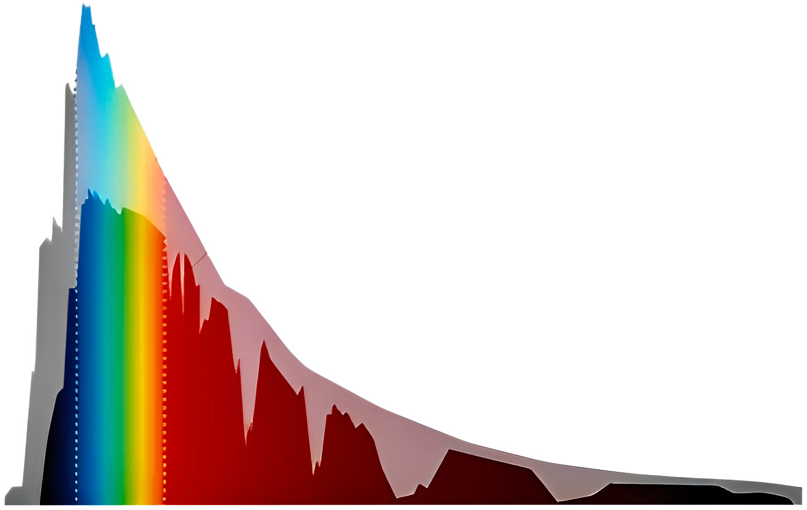

Planetary & satellite surface morphology
Research on terrestrial planet and satellite surfaces and associated features.
Learn more ...
Motion study of moons, comets & asteroids
Trajectory tracking and monitoring of motion of celestial objects
Learn more ...

Spectral characteristics of planetary surfaces
Implementation of spectrographic techniques to study planetary composition and atmosphere
Learn more ...
Imaging space debris
Imaging and tracking space junk in the lower earth orbit
Learn more ...
Research
Scope